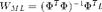
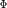
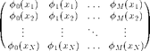
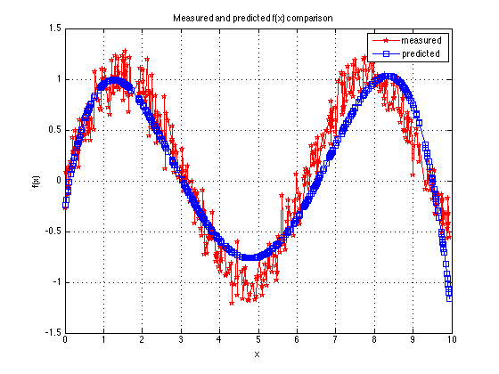

Contents
Maximum likelihood
This is the script for maximum likelihood algorithm using polynomial base function
clc;
clear;
close all;
Generate data: generate t from x
x=0.0050:0.0050:10.0000; noise=0.15.*randn(1,2000); t=sin(x)+noise; data=[x;t]; % plot(x,t); % hold on % Split data into two sets idx=crossvalind('Kfold',size(data,2),5); test_idx = find(idx==1); train_idx = find(idx~=1);
Training params
Below is the equation for Maximum likelihood training.

Here  is

PHI=[x(train_idx)'.^0 x(train_idx)'.^1 x(train_idx)'.^2 x(train_idx)'.^3 x(train_idx)'.^4]; w=inv(PHI'*PHI)*PHI'*t(train_idx)';
Testing
Predicted f(x) using test data
PHI_test=[x(test_idx)'.^0 x(test_idx)'.^1 x(test_idx)'.^2 x(test_idx)'.^3 x(test_idx)'.^4]; fx = PHI_test * w;
Result: f(x)curve and coefficient w
figure(1); plot(x(test_idx),t(test_idx),'rp-'); hold on plot(x(test_idx),fx,'bs-'); legend('measured', 'predicted'); grid on; xlabel('x'); ylabel('f(x)'); title('Measured and predicted f(x) comparison'); fprintf('\ncoefficient w:\n'); w
coefficient w:
w =
-0.25985
2.2826
-1.2777
0.21674
-0.011286
